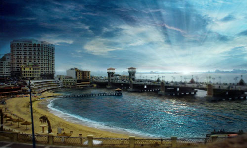

Some events in Egypt
Alexandria International Film Festival

The Alexandria International Film Festival takes place every November and is a key event in Egypt's cinematic calendar. Independent filmmakers from across the world showcase their work here.
For more visit Alexandria International Film Festival
Cairo International Film Festival
One of the longest-running cultural events in the Arab world, this annual festival celebrates film from across the world but with a focus on Arab and African contributions.
Cairo Jazz Festival
A three-day celebration of jazz, bringing acclaimed local and international musicians to Cairo. Most performances are held at the venue halls of the Greek Campus as well as the Cairo Jazz Club.
Customer Engagement Technology Conference
The forum this year, held on August 15, at the Ramses Hilton hotel in Cairo, is covering everything from digital transformation, to omni-channel engagement.